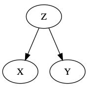

Probability
$$ \newcommand{\dbot}{\mathbin{\text{$\bot\mkern-8mu\bot$}}} $$
Joint Probabilities
Factoring joint probabilities:
$$ P(x_1, \ds, x_n) = P(x_1) - P(x_2 | x_1) \cdots P(x_n | x_1, \ds x_{n-1}) $$
Conditional Independence
Definition. Events \(X\) and \(Y\) are conditionally independent on \(Z\) if and ony if
$$ P(x | y, z) = P(x | z) \\ \land P(y | x, z) = P(y | z) $$
for all values of \(x,y,z\).
Example: Blood Types
Definition. Two factors \(A\) and \(B\) are marginally independent if they do not directly affect each other's likelihoods.
Notation. "\(A \dbot B\)" abbreviates "\(A\) and \(B\) are marginally independent".
Consider this situation: We have parents Rhonda and Sam, and child Tim.
Genetypes: \(\{ AA, AB, AO, BB, BO, OO \}\)
Phenotypes: \(\{ A, B, AB, O \}\)
Genotypes \(\rightarrow\) Phenotypes:
$$ \begin{cases} AA, AO &\mapsto A \\ BB, BO &\mapsto B \\ AB &\mapsto AB \\ OO &\mapsto O \end{cases} $$
"R is conditionally independent on S"
$$ R \dbot S | \varnothing \\ R \not\dbot S | T \\ R \dbot S | \{ \overline{R}, T \} $$
note that conditional independence is not monotonic withe the amount of auxilliary information given.
Notation. \(\d{R}\) is \(R\)'s genotype, and \(R\) is \(R\)'s phenotype.
$$ R \dbot S | \varnothing \\ R \not\dbot | \{ T \} \\ R \dbot S | \{ T, \d{R} \} $$
There are \(6^3 \cdot 4^3 = 13,824\) possible genotype-phenotype assignments. Each assignment has an associated probability.
Expanding a probability:
$$ P(\d{r}, \d{s}, \d{t}, r, s, t) = \cdot P(\d{r}) \cdot P(\d{s} | \d{r}) \cdot P(\d{t} | \d{r}, \d{s}) \cdots P(t | s, r, \d{t}, \d{s}, \d{r}) $$
But since we know certain marginal independences, so we can rewrite
$$ P(\d{s} | \d{r}) = P(\d{s}) \\ \forall x, P(x | y) = P(x) \text{ where } x \neq y \\ \forall x, P(x | \d{y}) = P(x) \text{ where } x \neq y \\ P(\d{r}, \d{s}, \d{t}, r, s, t) = \cdot P(\d{r}) \cdot P(\d{s}) \cdot P(\d{t} | \d{r}, \d{s}) \cdot P(r | \d{r}) \cdot P(s | \d{s}) \cdot P(t | \d{t}) \\ 5 + 5 + 215 + 23 + 23 + 23 + 23 = 294 \text{ possibilities!} $$
Bayesian Network

So, drawing \(A \righarrow B\) implies that \(P(A, B) = P(A) P(B | A)\). Drawing \(B \righarrow A\) implies that \(P(A, B) = P(B) P(B | A)\). And, drawing \(A\) and \(B\) unconnected implies that \(P(A, B) = P(A) P(B)\).
Example: Bonfire
You are invited to friend's house for a bonfire. On your way there, you see billows of smoke coming from the house's general direction. What should you assume?
Factors: Fire Safety, Bonfire, House Fire, Invitation, Smoke
Bayesian network:
Bayesian Networks
There are a couple atomic subgraphs:
Fork: \(X \not\dbot Y\), \(X \dbot Y | Z\).
Chain: \(X \not\dbot Y\), \(X \dbot Y | Z\).
Collider: \(X \dbot Y\), \(X \not\dbot Y | Z\).
Definition. Given a set \(Z\) of nodes, a path \(X - W_1 - \cdots - W_k - Y\) is blocked by \(Z\) if \(\exists W_i\) such that
If every path between nodes \(X\) and \(Y\) is blocked by \(Z\), then \(X\) and \(Y\) are \(d\)-separeted by \(Z\) (\(X \dbot Y | Z)\). I.e. \(X \bot Y | Z \implies X \dbot Y | Z\).